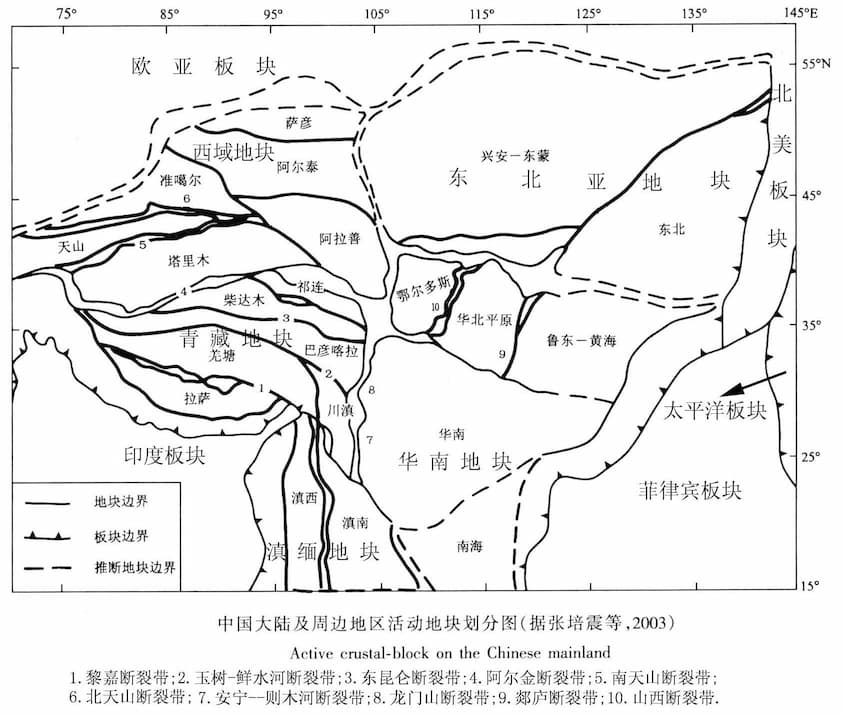

CN-block: 中国大陆及周边活动地块数据
CN-block 数据提供了中国大陆及周边活动地块数据，是 GMT 中文社区由 中国大陆及周边地区活动地块划分图（王辉等（2003）中的图 1，即下图）矢量化而成，并做了一定的格式转换。
{kind=link}
数据下载
macOS/Linux 用户请下载数据 china-geospatial-data-UTF8.zip（UTF8 编码），
Windows 用户请下载数据 china-geospatial-data-GB2312.zip（GB2312 编码）。
数据包中提供了三个地块有关的数据文件:
CN-block-L1.gmt：一级地块边界数据CN-block-L1-deduced.gmt：一级地块推断边界数据CN-block-L2.gmt：二级地块边界数据
示例图
#!/usr/bin/env bash
gmt begin BLOCK
gmt gmtset MAP_ANNOT_OBLIQUE 6
gmt gmtset MAP_TICK_LENGTH_PRIMARY 0
gmt gmtset MAP_FRAME_TYPE plain
# 底图和海岸线
gmt basemap -R78/12/149/53+r -JB105/10/25/47/15 -Bx10 -By5 -BneWS
gmt coast -Ggray95 -S83/216/238 -A5000 -Dh
# 中国国界
gmt plot CN-border-L1.gmt -W0.2p -Gwhite
# 绘制推断地块边界
gmt plot CN-block-L1-deduced.gmt -W1.0p,2/138/210,-
# 绘制二级地块边界
gmt plot CN-block-L2.gmt -W1.0p,orange
# 绘制一级地块边界
gmt plot CN-block-L1.gmt -W1.0p,2/138/210
# 活动地块标注
gmt text -F+f10p << EOF
90 45 Xiyu region
122 46 Northeastern Asia region
120 35 North China region
110 27 South China region
90 33 Tibetan Plateau region
97 23 Yunnan-Burma region
EOF
# 边界图例
gmt legend -DjTL+w2.8i+jTL+o0.2c/0.2c -F+gwhite+p0.5p --FONT_ANNOT_PRIMARY=8p << EOF
S 0.3i - 0.50i 2/138/210 1.0p,2/138/210 0.7i Active tectonic-block region boundary
S 0.3i - 0.44i - 1.0p,2/138/210,- 0.7i Deduced region boundary
S 0.3i - 0.50i orange 1.0p,orange 0.7i Active tectonic-block boundary
EOF
# 南海诸岛
gmt inset begin -DjBR+w2c/2.8c -F+p0.5p
gmt coast -JM? -R106/121/3/24 -Ggray95 -S83/216/238 -Df
gmt plot CN-border-La.gmt -W0.2p -Gwhite
gmt inset end
gmt end show
{kind=link}
数据来源与处理
该数据由用户王杰利用王辉等（2003）中的图 1 矢量化得到。
数据引用
张培震, 邓起东, 张国民, 等. 中国大陆的强震活动与活动地块. 中国科学D辑, 2003, 33(z1):12-20.
张国民, 马宏生, 王辉, 等. 中国大陆活动地块边界带与强震活动. 地球物理学报, 2005, (03):602-610.
王辉, 张国民, 吴云, 等. 中国大陆活动地块变形与地震活动的关系. 中国地震, 2003, (03):243-254.